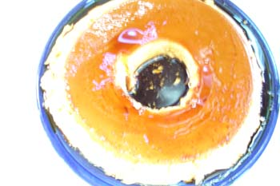

Flan
Continuing my personal 70’s revival , I decided to make a flan for dessert tonight. And I had those two extra egg yolks that were left over from Monday’s cheese soufflé. I know that’s false economy—creating a whole dish to use up a nickel’s worth of ingredients, but it’s how I was raised. Thanks, Mom!
The following recipe is an adaptation of one by Julia Child, given to me by my old classmate in the chef’s apprentice program, Page Shepherd. A few notes first for beginners: when making the caramel, use a stainless steel or white enamel pan so you can see what color it is turning. The syrup will begin to smell burned before it is done; don’t let that worry you. It is supposed to get very dark. On the other hand, it will continue to cook a bit even after the heat is off, so when it is about the color of dark honey, turn off the heat and continue to swirl the pan until it is about the color of maple syrup, then pour into the mold or individual ramekins.
When scalding milk, it is done when you can see lots of tiny bubbles all around the edge of the pan. There is very little time between scalded milk and a volcano of boiling milk that erupts all over your stovetop, so watch it carefully when you think it’s about ready. Milk may be scalded in same pan you used for sugar. You may use a can of evaporated milk for part of the milk; I think it makes the custard richer and silkier.
The following amounts make enough for a ring mold that’s 9 inches across and 2 inches deep.

- 1/3 cup sugar for caramel syrup
- 3 cups milk, may be part evaporated, scalded
- eggs, 5 whole and 1 or 2 yolks
- 1/3 cup sugar, more or less to taste
- vanilla, 1 or 2 teaspoons
Swirl first 1/3 cup sugar with about 2 tablespoons water in saucepan until caramelized a dark brown, see above note. Immediately pour into ring mold or individual ramekins. Milk may be heated in same pan. While milk is heating beat eggs and yolks, adding second 1/3 cup sugar, keeping an eye on the milk. Whisk hot milk into egg mixture, adding in a thin stream so as not to scramble eggs. Add vanilla. Strain into mold or ramekins. Place on dishcloth in larger pan, pour boiling water carefully around mold until it comes halfway up the sides. Bake at 325º F for about 45 minutes, or until knife inserted in center of custard comes out clean. Cool on rack, then with clean hands push down on custard around the edges to loosen it, place serving plate upside down over mold, invert, turn right side up and give a sharp shake so that custard is released onto platter. You should have a lovely crème caramel, with a dark topping and some running down the sides.
This dessert is one of Poppy’s favorites; he always orders it in restaurants.
Comments
After tasting this I have a few more comments! It’s been so long since I made it that my caramelizing skills are rusty. I definitely over-browned the caramel. You want a hint of burnt-sugar flavor—enought to offset the blandness of the custard, but you don’t want it to be too bitter. I thought this was a smidge on the too bitter side. And I thought the custard should have been a tiny bit sweeter. I don’t like it too sweet, but just a little sweeter.
I just made a fabulous flan. I got the recipe from a Puerto Rico woman in Hospice. If you are interested in the recipe, will send it. Quite simple and very delicious
Add a comment